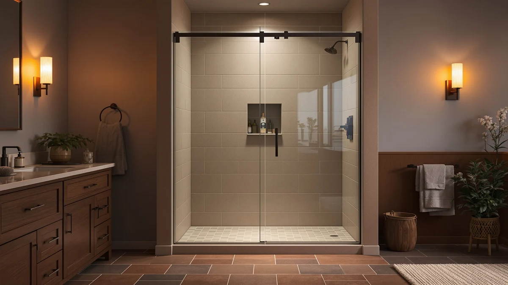

How Much Does a Glass Shower Door Cost: Complete Guide (2026)
Prices and picks verified as of October 2026. Independent, reader-supported reviews.


Things to Know Before You Buy
- Frame style is the biggest cost lever. Framed sliding doors start around $150 to $250, semi-frameless doors run $200 to $400, and fully frameless doors typically cost $600 to $2,000 or more installed.
- Glass thickness adds up fast. Doors range from 1/4 inch (6mm) tempered glass at the budget end to 3/8 inch (10mm) or 1/2 inch (12mm) on premium frameless doors, and thicker glass alone can add $200 or more to the price.
- Installation is a separate line item. A DIY-friendly sliding kit saves you $150 to $500 in labor, while a custom frameless enclosure usually needs a professional to template and install it.
- Stock sizes cost less than custom. Doors sized to fit a standard 56-60 inch or 44-48 inch opening, like the picks below, cost hundreds less than a door cut to a nonstandard opening.
- Seals and hardware wear out before the glass does. Budget $12 to $30 every few years for replacement seals and sweeps rather than replacing the whole door early.
How much does a glass shower door cost? Expect to pay between $150 and $700 for the door itself, with most homeowners landing around $300, and anywhere from $400 to $2,500 total once you factor in glass thickness, frame style and professional installation.
That range swings widely because a glass shower door is three purchases bundled into one: the glass itself, the hardware that holds it, and the labor to get it level and watertight. A basic framed slider and a custom frameless enclosure can differ by $1,500 or more even though they do the same job of keeping water in the shower.
We compared current Amazon and installer pricing across framed, semi-frameless and frameless doors to map out what actually drives the cost up or down, and where you can save money without ending up with a door that leaks or rattles. Below, we break down pricing by door type, the mistakes that waste money, and three doors worth considering at different price points.
What You Need to Know
The question of how much a glass shower door costs rarely has one answer, because the price is the sum of four separate decisions. Frame style sets the floor: framed sliding doors are the least expensive because the metal track does most of the structural work, so the glass itself can be thinner and cheaper. Semi-frameless doors, like the Ironovacage and ENSO SENKA doors below, split the difference, using a slim top and bottom track with minimal side framing. Frameless doors drop the metal almost entirely and rely on thick tempered glass and heavy-duty hinges or rollers, which pushes the price up.
Glass thickness is the second lever. A 1/4 inch (6mm) pane is standard on framed and semi-frameless doors and keeps costs down. Move up to 3/8 inch (10mm) or 1/2 inch (12mm) glass, common on frameless doors, and you are paying for both the extra material and the reinforced hardware needed to support it.
Size and configuration matter too. A standard width, such as 56-60 inches or 44-48 inches, ships as a stock item and costs less than a door custom cut for an out-of-plumb wall or an unusual opening. Sliding and bypass doors tend to cost less than pivot or hinged doors of the same size, since they need less hardware.
Installation is its own budget line. A reversible, DIY-friendly sliding kit can save you hundreds of dollars in labor, while a frameless enclosure usually calls for a professional to template the opening and set the glass plumb.
Types and Categories
Shower door cost varies more by frame style than by any other factor, and four categories cover nearly everything on the market. Framed shower doors use a full metal frame around the glass panel, usually aluminum with a chrome, nickel or matte black finish. The frame carries the structural load, so the glass can be a thinner 1/4 inch pane, which keeps these doors the cheapest option on the market, often $150 to $300.
Semi-frameless doors, like the Ironovacage semi-frameless slider and the ENSO SENKA bypass door in our picks, keep a track at the top and bottom but drop the side framing around the glass itself. That gives you a cleaner look than a fully framed door without the price jump of a true frameless design, typically $200 to $450.
Frameless doors skip the metal frame almost entirely, held in place by heavy hinges, clamps or rollers bolted directly to thick tempered glass. They look the most like a glass wall and clean up the easiest, since there is no frame channel to trap water or mildew, but expect to pay $600 and up, more for custom sizing.
Configuration changes the price too. Sliding and bypass doors glide on a track and work well for standard alcove showers. Pivot and hinged doors swing open and typically cost more for the same glass thickness, since the hinges have to support the full weight of the panel. Neo-angle and corner enclosures, built for a shower tucked into a corner, use two glass panels and cost more than a single straight door of comparable size. Barn-style sliding doors, which hang from an exposed track, have become a popular upgrade look and sit closer to the frameless price range.
How to Choose
Start with your opening, not the catalog. Measure the width and height of your shower opening in at least three places, since older walls are rarely perfectly square, and compare that against the adjustable range listed for each door, such as the 56-60 inch span on the ENSO SENKA pick below. A door that is a poor match for your opening will leak or need expensive on-site cutting no matter how much you spend on it.
Set a real budget range before you shop, because the gap between a $200 sliding door and a $1,500 custom frameless enclosure is enormous and both will keep water in your shower. If you are renovating a rental or a secondary bathroom, a framed or semi-frameless sliding door covers the job well below $300. If this is your primary bathroom and you plan to stay in the home, the lower long-term maintenance of a frameless door can justify the higher upfront cost.
Decide on installation before you buy, not after. Stock-size sliding and semi-frameless doors are built for a reversible, DIY-friendly install and typically include the seals and hardware you need. A pivot door or a custom frameless enclosure is heavier and less forgiving to level, so budget for a professional unless you have experience with glass installs.
Match the hardware finish to your existing fixtures. Chrome, brushed nickel and matte black are the three finishes you will see most often, and switching finishes after the fact usually means buying new hardware rather than swapping a part.
Factor in glass coating too. An easy-clean or anti-fog coating adds a modest amount to the price but cuts down on the hard water spotting and squeegeeing you will otherwise do every week.
Common Mistakes to Avoid
Buying by price alone is the most expensive mistake you can make. A rock-bottom sliding door that does not match your opening's width or height often ends up costing more once you add a return, a replacement, or emergency sealant to stop a leak.
Skipping the measurement step is a close second. Shower openings shift over the life of a house, and a door that looks like the right size in a listing photo can be an inch too narrow or too wide for your actual wall-to-wall gap. Measure in three spots, not one, before you order.
Underestimating installation cost trips up a lot of first-time buyers. A heavier frameless door or a pivot hinge system is not a simple weekend project for most people, and factoring in professional labor after you have already bought the door can blow past the budget you set.
Ignoring glass thickness is another common misstep. A thinner 1/4 inch panel on a wide opening can feel noticeably less sturdy and rattle more than the same door in a narrower size, so check the manufacturer's recommended width range for the glass thickness you are buying.
Treating seals and sweeps as an afterthought leads to water damage that costs far more than the shower door itself. Reviewers consistently note that a worn seal, not the glass, is the first part of a shower door to fail.
Care and Maintenance
A glass shower door is one of the few bathroom fixtures where a few minutes of upkeep each week prevents a real repair bill later. Squeegee the glass after every shower to stop hard water spots from etching into the surface, since mineral buildup left to dry is far harder to remove than water wiped off wet.
Clean the track or seal weekly with a vinegar-based or hard-water-specific cleaner rather than an abrasive scrub pad, which can dull the glass coating and shorten the life of any anti-fog or easy-clean treatment. Owners report that a quick wipe-down takes less time than a monthly deep clean and keeps the door looking new for years.
Check the bottom seal and side sweeps every few months. These rubber or vinyl parts fail long before the glass or hardware does, and a cracked or shrunken seal is the most common source of a shower door leak. Replacement seals, like the sweep and side-seal options among our picks, run $12 to $30 and take less than an hour to swap, a fraction of the cost of water damage to a bathroom floor.
Lubricate sliding rollers or pivot hinges once or twice a year with a silicone-based spray rather than oil-based products, which attract grime. A door that glides smoothly puts less strain on the rollers and the track, which extends the life of the hardware you already paid for.
Our Top Picks
If you want a place to start rather than just a budget range, these three options span the market we just described: a semi-frameless slider, a lower-cost bypass door, and a seal kit for extending the life of a door you already own. Prices shift on Amazon, so check the live price before buying.

Editor’s Pick
Shower Door Semi-Frameless & Double
A semi-frameless sliding door with 1/4 inch tempered glass and a reversible design that fits a 56-60 inch opening. The matte black finish and double-sliding track give you a frameless look at well under half the price of a custom frameless enclosure.
$249.99
Check Price on Amazon
Best Value
ENSO SENKA 56-60" W x
A bypass sliding door that covers the same 56-60 inch range as our top pick for slightly less, with trimmable top and bottom rails for a closer fit to your actual opening. The reversible installation makes it a straightforward swap for an aging framed door.
$227.98
Check Price on Amazon
Premium Choice
FCSOTSPS Sliding Shower Door Bottom
Not a full door, but the cheapest fix for a shower door that is already leaking: a bottom sweep sized for 3/8 inch glass that creates a water barrier without replacing the whole enclosure. Measure your glass thickness and door length before ordering, since seal strips are not universal.
$26.99
Check Price on AmazonFrequently Asked Questions
How much does a glass shower door cost on average?
Most glass shower doors run from $200 to $700 for the door itself, with sliding and semi-frameless styles at the lower end and true frameless doors at the higher end. Add $150 to $500 for professional installation if you are not doing it yourself, and budget for hardware finish upgrades like matte black or brushed gold separately.
Is a frameless shower door worth the extra cost?
For most bathrooms, yes, if you plan to stay in the home for years. Frameless doors use thicker glass and minimal hardware, so there is less metal to corrode and no frame channel to trap mold, which lowers your long-term cleaning and replacement costs even though the upfront price is higher.
How much does professional shower door installation cost?
Installers typically charge $150 to $500 for a standard sliding or hinged door, and $400 to $900 for a custom frameless enclosure that requires on-site glass templating. Get at least two quotes, since labor pricing varies more by region than the door itself does.
Can I install a glass shower door myself to save money?
Many sliding and semi-frameless kits, including the picks above, are designed for DIY installation and come with the hardware and seals you need. A hinged or heavy frameless panel is harder to level alone, so plan for a second set of hands and a few hours rather than a quick afternoon project.
Why do custom shower doors cost so much more than stock sizes?
A stock-size door like the 56-60 inch sliders in our picks is mass produced and ships ready to trim, which keeps the price under $300. A custom door is cut to the exact dimensions of your opening after a professional measures it on site, and that labor and glass waste is why custom frameless enclosures often run $1,000 to $2,500.
Verdict
So, how much does a glass shower door cost? For most bathrooms, plan on $200 to $700 for the door itself, and semi-frameless options like the Ironovacage pick above get you the closest look to a full frameless enclosure without the four-figure price tag. True frameless doors and custom sizing push the total well past $1,000 once you add professional installation, while a framed or semi-frameless sliding kit keeps the whole project under $500 including basic labor.
The number that matters most is not the lowest price you can find, but the total cost over the years you will own the door. A seal that fails after eighteen months or a frame that corrodes in a humid bathroom costs more in repairs and water damage than spending a bit more upfront on thicker glass and a quality finish. Measure your opening carefully, decide whether you are installing it yourself, and buy the door that fits the space you actually have rather than the one with the lowest sticker price.